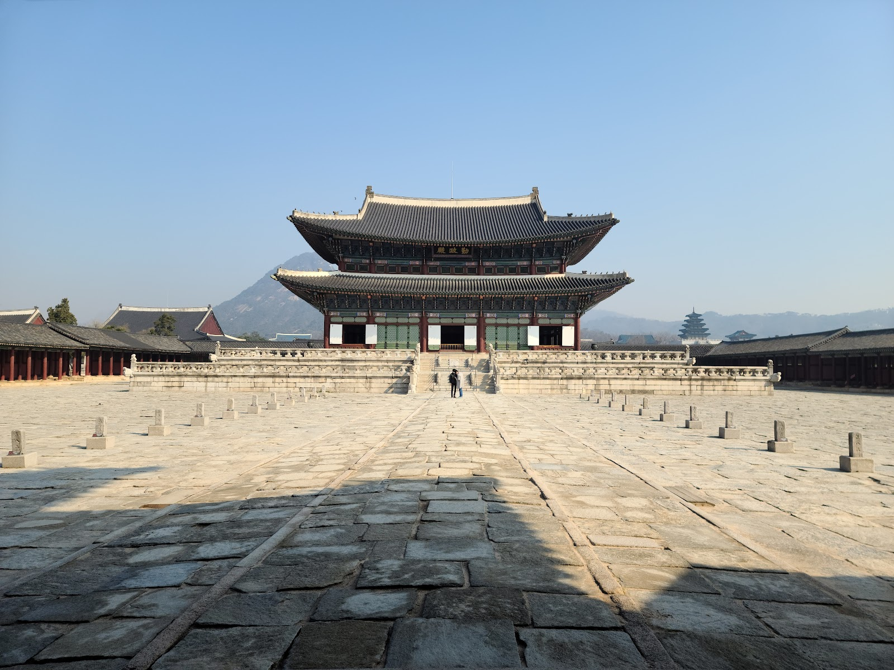

Gyeongbokgung Palace: A Guide to Seoul’s Grand Joseon Landmark
At a glance: Gyeongbokgung Palace is a historic royal complex in central Seoul and a rewarding stop for visitors interested in Korean history, architecture, and court life. Allow time to explore beyond its main gate: courtyards, ceremonial halls, and pavilions each reveal a different side of the palace. Address: 161 Sajik-ro, Jongno District, Seoul. Google rating: 4.6/5 from 46,914 reviews, according to the supplied current listing data.
Why visit Gyeongbokgung Palace?
Built in 1395, Gyeongbokgung was the principal palace of the Joseon dynasty. Its name is often translated as “Palace Greatly Blessed by Heaven,” and its scale makes that ambition tangible. The complex combines formal courtyards and imposing halls with quieter garden spaces, while the surrounding city gives the visit a distinctly Seoul setting.
The palace is not simply a preserved royal residence. It has been damaged, rebuilt, and restored over centuries. Much of it was destroyed during the Japanese invasions of the late 16th century, and the site remained largely abandoned until a major reconstruction began under Heungseon Daewongun in the 19th century. During the Japanese occupation, the palace was again altered and many buildings were removed. Restoration continues, so visitors may encounter areas that look different from older photographs or guidebooks.
That layered history is part of the experience. Look at the buildings as both examples of traditional Korean architecture and evidence of a changing political landscape. The contrast between the palace’s measured courtyards and the modern city beyond its walls is striking.
What to see inside
Begin at Gwanghwamun, the palace’s monumental south gate, then follow the main axis into the central courtyards. Geunjeongjeon, the throne hall, was the setting for major state ceremonies and is among the site’s most impressive buildings. Its raised platform, broad stone courtyard, and carefully arranged details convey the formality of royal government.
Continue toward the residential and reception areas to see a different atmosphere from the grand ceremonial spaces. Gyeonghoeru, a pavilion set beside a pond, is a memorable place to pause and take in the relationship between architecture and landscape. Hyangwonjeong, a smaller pavilion in a garden setting, offers another perspective on the palace’s quieter side.
The grounds are extensive, and it is easy to spend longer than expected moving between buildings. Rather than rushing to photograph every landmark, take time to notice painted beams, rooflines, stonework, and the way each courtyard frames the next view. If you have limited time, prioritize the main gate, Geunjeongjeon, and at least one of the garden or pavilion areas.
Planning your visit
Check the official palace website before setting out for current operating information, visitor notices, and details about any events or ceremonies. Schedules and access arrangements can change, and it is better not to plan your day around a performance without confirming it first. The official site is also the best source for current guidance on admission and any temporary closures.
Wear comfortable shoes: the palace involves substantial walking across open courtyards and paths. Seoul’s weather can make the grounds feel especially hot in summer or cold in winter, so dress for the forecast and bring water as appropriate. On bright days, sun protection is useful, particularly because many of the broad courtyards offer little shade.
For a richer visit, read a little about Joseon court life before arriving, or use the official site’s visitor information to see what interpretive resources are available. You can also take the visit at your own pace: the architecture is rewarding even without a detailed history lesson. Be considerate around other visitors, keep to permitted paths, and follow posted instructions around buildings and restoration work.
Good to know
- Address: 161 Sajik-ro, Jongno District, Seoul. Use the map link below to confirm the exact entrance and plan your route from your starting point.
- Check before you go: Consult the official website for current opening information, admission guidance, event schedules, and notices. Do not rely on an old itinerary for these details.
- Time and pace: The palace is a large complex. Leave enough time to walk between the main halls and the garden areas, and avoid treating it as a quick photo stop.
- Photography: The courtyards and architectural details make excellent subjects. Follow signs and staff instructions, especially where access is restricted or restoration is underway.
- Visitor feedback: The supplied Google listing shows a rating of 4.6 from 46,914 reviews. Treat ratings as a snapshot of visitor opinion, not a substitute for checking current site information.
Is Gyeongbokgung worth visiting?
For many first-time visitors to Seoul, it is one of the most meaningful places to understand the city’s past. Gyeongbokgung offers both headline sights and small discoveries: a view through a gate, a quiet pond, or the decorative details beneath a roof. Its history is complex, and the ongoing work of restoration is a reminder that the palace is not frozen in time. Visit with room to wander, and it becomes more than a checklist attraction.
FAQ
How much time should I allow for Gyeongbokgung Palace?
The grounds are extensive, so allow enough time to walk between the main halls and at least one garden area. Your visit may take longer if you want to read interpretive material or attend an event; check current details in advance.
What are the most important places to see?
Start with Gwanghwamun and Geunjeongjeon, then continue to Gyeonghoeru or Hyangwonjeong for a change of pace. The best route depends on how much time you have and which areas are open.
Where can I confirm current visitor information?
Use the official Gyeongbokgung website for current operating details, admission guidance, schedules, and notices. The Google Maps link below can help you locate the site.